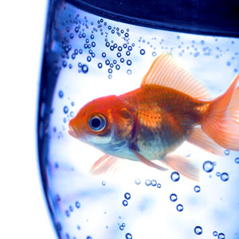

We apply the latest health-care technology with wisdom garnered from the centuries-old tradition of veterinary medicine, to find the safest and most effective treatments and cures, while always maintaining a caring relationship with our patients and their guardians.
Everyone who works at Wisdom Pet Medicine is not only well-trained, they are also pet lovers themselves. Learn more about our staff on the About Us page.

During the summer, my German Shorthair Pointer, Tonto, began to have severe redness and itching on his belly and feet. Through diagnostic testing, we learned that Tonto is severely allergic to over a dozen kinds of grass pollens.

When Samantha, our sweet kitten, began sleeping all the time and urinating excessively, we brought her to see the specialists at Wisdom. After running a blood test, Dr. Winthrop confirmed what we all feared – Samantha was showing signs of diabetes.

Wisdom Pet Medicine is the only clinic around that will even book pet fish for appointments. When our 13-year old goldfish, McAllister, turned from silvery white to an angry red, we called around, urgently trying to find a veterinarian who could help. Wisdom not only got us in the same day, but also was able to diagnose McAllister as having a severe case of septicemia.